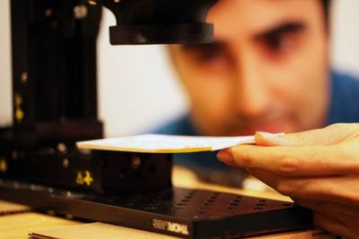
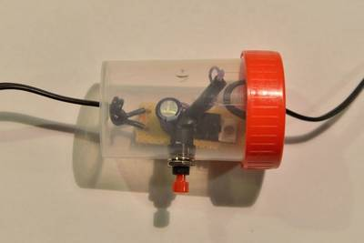
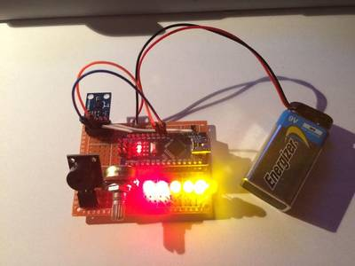

2016-09-29 - Nº 74

Editorial
Esta é a Newsletter Nº 74 que se apresenta com o mesmo formato que as anteriores. Se gostar da Newsletter partilhe-a!
Todas as Newsletters encontram-se indexadas no link.
Esta Newsletter tem os seguintes tópicos:
No dia de hoje comemora-se a data de nascimento de Enrico Fermi. Este físico italiano ficou conhecido por ter criado o primeiro reactor nuclear - o Chicago Pile-1. Ficou conhecido como o arquitecto da era nuclear e da bomba nuclear. Também hoje comemora-se a data de nascimento de László Bíró. Este inventor ficou conhecido pela invenção da caneta esferográfica em 1888. Nas noticias desta semana a NVidia apresentou a sua plataforma Xavier - um super-computador com características de Inteligência Artificial para ser usado em veículos de condução autónoma. O processador tem capacidade de executar 20 TOPS (20 milhares de bilhão operações por segundo) consumindo apenas 20 watts de energia. O Elon Musk apresentou os seus planos para colocar o Homem em Marte. O plano ambicioso custará cerca de 500 mil dólares por pessoa com cerca de 100 pessoas por viagem. A viagem inicial está planeada para 2024. A Panasonic desenvolveu uma bateria de iões de lítio que é flexível e dobrável. Com uma espessura de cerca de 0.55mm é destinada para aplicações em dispositivos utilizáveis ou em formato de cartão. Estão a ser colocados os retoques finais no maior radio telescópio do mundo. Localizado na China trata-se de um equipamento com 500 metros de diâmetro. Tem mais 200 metros de diâmetro do conhecido radio Telescópio de Arecibo em Porto Rico. Desenvolvida pela fundação Raspberry Pi, a distribuição Raspbian passou a contar com um novo interface gráfico designado de PIXEL. Esta versão mais trabalhada do anterior interface pretende simplificar e melhorar o interface X desta distribuição dando-lhe algumas funcionalidades que vemos em distribuições ditas "main-stream" como o Ubuntu, o Mint ou o Fedora.
Na Newsletter desta semana apresentamos diversos projetos de maker assim como alguns modelos 3D que poderão ser úteis. Na rubrica “Documentação” apresentamos a revista MagPI de Outubro assim como a revista newselectronics de 27 de Setembro de 2016.
Está disponível por mais alguns dias um pacote de eBooks relacionados com a makerScene pro um custo bastante aceitável. Podem aproveitar a oportunidade no Humble Bumble.
João Alves ([email protected])
O conteúdo da Newsletter encontra-se sob a licença  Creative Commons Attribution-NonCommercial-ShareAlike 4.0 International License.
Creative Commons Attribution-NonCommercial-ShareAlike 4.0 International License.
Novidades da Semana ^
Introducing Xavier, the NVIDIA AI Supercomputer for the Future of Autonomous Transportation
"At the inaugural GPU Technology Conference Europe, NVIDIA CEO Jen-Hsun Huang today unveiled Xavier, our all-new AI supercomputer, designed for use in self-driving cars. This is the greatest SoC endeavor I have ever known, and we have been building chips for a very long time, Huang said to the conferences 1,600 attendees. Xavier is a complete system-on-chip (SoC), integrating a new GPU architecture called Volta, a custom 8 core CPU architecture, and a new computer vision accelerator. The processor will deliver 20 TOPS (trillion operations per second) of performance, while consuming only 20 watts of power. As the brain of a self-driving car, Xavier is designed to be compliant with critical automotive standards, such as the ISO 26262 functional safety specification." [...]
Elon Musk unveils plans for Mars civilization
"In a talk on Tuesday at the International Astronautical Congress in Guadalajara, Mexico, SpaceX CEO Elon Musk laid out engineering details to establish a permanent, self-sustaining civilization of a million people on Mars, with an initial flight as soon as 2024. SpaceX is designing a massive reusable Interplanetary Transport System spacecraft with cabins. The trip would initially cost $500,000 per person, with a long-term goal of 100 passengers per trip. Musk plans to make humanity a multiplanetary species to ensure survival in case of a calamity like an asteroid strike. This is really about minimizing existential risk and having a tremendous sense of adventure, he said." [...]
Panasonic Develops Bendable, Twistable, Flexible Lithium-ion Battery
"Panasonic Corporation announced today that it has developed a Flexible Lithium-ion Battery with a thickness of only 0.55mm, or about 0.022 inches. Suitable for use in card-type and wearable devices, this rechargeable battery can retain its characteristics even after repeatedly bent into a radius of 25mm or twisted to an angle of 25 degrees. Card devices, which are often carried in wallets or pockets, require internal components that can withstand bending and twisting. Slim lithium-ion batteries are used in such devices, but these batteries can degrade when they are bent or twisted, resulting in shorter operating time for the devices. Panasonic's new flexible battery can withstand bending and twisting beyond the Japanese Industrial Standards for identification cards*1. When used in card devices such as smart cards and card keys that work on batteries, as well as body worn devices and smart clothing, this battery can retain its characteristics even if the device is frequently bent or twisted." [...]
Worlds largest radio telescope will search for dark matter, listen for aliens
"In a stunning landscape of jagged limestone hills in southwestern China, engineers are putting the finishing touches on a grand astronomy facility: a half-kilometer-wide dish nestled in a natural depression that will gather radio signals from the cosmos. The worlds largest radio telescope will catalog pulsars; probe gravitational waves, dark matter, and fast radio bursts; and listen for transmissions from alien civilizations. Yet the architect of the tour de force is blas about what his telescope might capture. Im really not very interested in science, Im sorry to say, says Nan Rendong, chief scientist and chief engineer of the Five-hundred-meter Aperture Spherical radio Telescope (FAST) here. Colleagues insist he is joking, but there is no question that what has consumed 2 decades of his life and is now wowing other astronomersis engineering. As a civil engineering feat, FAST is obviously amazing, says Fred Lo, former director of the U.S. National Radio Astronomy Observatory (NRAO) in Charlottesville, Virginia." [...]
Outras Notícias
- New Take on an Ancient Method Improves Way to Find Prime Numbers
- Introducing PIXEL
- German retailer Media Markt tests home delivery by robot
- Industry leaders establish partnership on AI best practices
Ciência e Tecnologia ^
Reconfigurable Chaos-based Microchips Offer Possible Solution to Moores Law
"Researchers at North Carolina State University have developed new, nonlinear, chaos-based integrated circuits that enable computer chips to perform multiple functions with fewer transistors. These integrated circuits can be manufactured with off the shelf fabrication processes and could lead to novel computer architectures that do more with less circuitry and fewer transistors. Moores law states that the number of transistors on an integrated circuit will double every two years in order to keep up with processing demands. Previously this goal has been addressed by shrinking the size of individual transistors so that more could be added to the chip. However, that solution is quickly becoming untenable, and the semiconductor industry is looking for new ways to create better computer chips." [...]

Judging a book through its cover
"MIT researchers and their colleagues are designing an imaging system that can read closed books. In the latest issue of Nature Communications, the researchers describe a prototype of the system, which they tested on a stack of papers, each with one letter printed on it. The system was able to correctly identify the letters on the top nine sheets." [...]
The microdoctors in our bodies
"ETH researchers are developing tiny, sophisticated technological and biological machines enabling non-invasive, selective therapies. Their creations include genetically modified cells that can be activated via brain waves, and swarms of microrobots that facilitate highly precise application of drugs. Richard Fleischner, who directed the 1966 cult film Fantastic Voyage, would have been delighted with Bradley Nelsons research: similar to the story in Fleischners film, Nelson wants to load tiny robots with drugs and manoeuvre them to the precise location in the human body where treatment is needed, for instance to the site of a cancer tumour. Alternatively, the tiny creatures could also be fitted with instruments, allowing operations to be performed without surgical intervention. The advantages compared with conventional treatments with drugs are clear: far more targeted therapy, and as a result, fewer side effects." [...]
Documentação ^
A documentação é parte essencial do processo de aprendizagem e a Internet além de artigos interessantes de explorar também tem alguma documentação em formato PDF interessante de ler. Todos os links aqui apresentados são para conteúdo disponibilizado livremente pelo editor do livro.
MagPi 50
"Issue 50 of The MagPi was always going to be special for us. Its not everyday you turn 50 after all. But the Raspberry Pi isnt about us, its about the community. So weve turned the biggest, shiniest spotlight we could on The 50 Greatest Raspberry Pi Projects." [...]
newelectronics 27 Setembro 2016
"New Electronics is a fortnightly magazine focusing on technological innovation, news and the latest developments in the electronics sector. Downloadable as a digital page turner or pdf file, or offered as a hard copy, the New Electronics magazine is available in a format to suit you." [...]
Modelos 3D ^
Com a disponibilidade de ferramentas que permitem dar azo a nossa imaginação na criação de peças 3D e espaços como o thingiverse para as publicar, esta rubrica apresenta alguns modelos selecionados que poderão ser úteis.
Plier Stand
"inspired by http://www.thingiverse.com/thing:443356 with the addition of ends that prevent pliers to fall off the stand" [...]
Archimedean spiral generator
"Archimedean spiral is the base of Spiral moving fish. The equation of Archimedean spiral is r = a + b * theta. If you just increase theta with the same amount, the distance between each segment of the moving fish would also be increased. In order to equally spaced each segment, I need to find out all angles between each segment. That's what the find_parent_angles module does in the .scad file. For more precisely controlling models between each segment, I also divide all parent angles found by the find_parent_angles module into several sub angles which may be controlled by the children_per_step parameter." [...]
G-Clamp fully printable
"Verified simple small G-Clamp fully printable without support. Additional a larger frame and screw is provided which adds another centimeter. The protector can be reused for the larger clamp. The screw has a fair amount of space, so it should fit without problems into the frame screw hole. Should anyone still have an issue let me know and i can provide an additional version. The best way to mount the protector is to use the clamp itself by closing the clamp until the screw ball and protector ball joint clicks together or use your thumb. For my requirements i used only 25% (~3 hour print) because i need just to hold things in place while the glue is drying. For more force 100% infill is recommended and don't forget it's not made of steel. Enjoy :)" [...]
Projetos Maker ^
Diversos Projetos interessantes.
Wireless temperature and humidity monitor for babys room
"This project describes a DIY wireless temperature and humidity monitor for kids or infants room using the Arduino platform, and inexpensive and easily available ASK transmitter/receiver modules. On the transmitting end, an Arduino nano senses the ambient room temperature and humidity using the DHT22 sensor and transmits the data to a receiving end Arduino over a 433 MHz ASK RF link. The receiving side Arduino decodes the received bytes and displays the information on a LCD screen. The indoor range of the RF transmission is about 100 ft, which is mostly sufficient for a decent size house." [...]
DIY ToolsBuild Your Own Logic Probe
"Oscilloscopes are extremely helpful when you're testing and troubleshooting digital circuits. But for many individuals, an oscilloscope may not be a solution because of the price tag (hundreds to thousands of dollars) or the bench space. The first oscilloscope I personally owned was an old 70s scope that was too bulky for a cramped working area." [...]
Bluetooth controlled switch (Android)
"Having made an IR remote controlled switch for my house, I wanted to try the Bluetooth this time. So although I started to make a blue tooth controlled switch, I ended up throwing in a LCD display to see what was happening and finally added a distance sensor to turn on one light when a hand was waved in front of it. I threw in a clock module so that the LCD display would not look blank when it had nothing to display." [...]
Lithium cell capacity tester
"Greetings. This instructable lists a charging lithium cell capacity. Other testers I've found work by discharging the cell completely, but I wanted to have ready to use cells with a standarized voltage. The monitor works by Ohm's Law, and measures voltage across a shunt resistor to infer flowing current." [...]
Reverse engineering a server CPU voltage regulator module
"A recent ebay fishing expedition yielded an interesting little part for the very reasonable sum of about five pounds. Its a voltage regulator module from a Dell PowerEdge 6650 Xeon server. I originally bought this because I had the idea of salvaging parts from it to use in another project. These are high quality modules that will have very good inductors and sometimes an array of high value ceramic capacitors that could be re-used (ceramics of at least 22F at 16V and above are rather pricey at the moment). So the VRM arrived and I was rather impressed with the build quality and decided to have a go at reverse engineering it." [...]
Switcher A WiFi Open Source Power Switch and Socket Based on ESP8266
"This is my latest project The Switcher, a Wifi, open source, power switch and socket. Built with modularity in mind It can be mounted as a wall lights switch or used as a standalone power socket. Switcher gives the ability to control your lights, or any other household appliance, wirelessly over the wifi network and the Internet! There is a dedicated iOS App and web interface which can be used with any browser! You can build your own designs to make unique wall light switches for your house. The switch uses the prominent ESP8266-01 module, an Arduino program, a 3D printed box and modules. It is free and open source, so you can build and modify it on your own!" [...]
Digital Clock using one shift register
"Here I am going to show you how to make Digital clock using Arduino Uno (while final assembling I used Arduino Nano because of its small size). Instead of giving load on Arduino I am using Real Time Clock (RTC) for timing purpose. Great thing about it is using only one shift register. I am using 4 seven segment display. To avoid wiring mess on breadboard i directly connected the seven segment display on the perf board." [...]
Monitoring humidity, temperature in the hen house: DHT11, DS18B20, ESP8266
"In order to keep track off the temperature in the night quarters of my chicken coop I needed a wireless connection to some sensors. As I had an ESP8266-01 lying around that seemed like the perfect medium to do that with." [...]
Build a Hygrometer at Home Using Raspberry Pi and SI7021
"Sometimes for us, high humidity proves to be really uncomfortable as well as unhealthy. For householders, it can cause potential damage as well. For a home, high humidity ruins wooden floors and furniture with encouraging mustiness growth around us. By good fortune, there are methods that allow you to monitor and control home humidity. In this crusade we will be making a Hygrometer, a system used for measuring the moisture content in the atmosphere, using a Raspberry Pi and SI7021, Humidity and Temperature sensor. Our aim was to check the relative humidity and temperature in the apartment(ideal relative humidity is about 40-50%, ideal room temperature is approximately between 15 C (59 F) and 30 C (86 F) ) and one way is to use a hygrometer. We could, of course, have bought one, but having a Raspberry Pi and Humidity & Temperature sensor in hand, we thought we would make one (Why not!)." [...]

LED Light Timer
"Half of my family tends to fall asleep with the light on. It doesn't feel right to leave the light on all night, so we 'improved' the two lamps to have a timer that turns off after twenty minutes. Here's the basic setup. We used this IKEA LED lamp. It has a wall socket transformer that produces an output of 4 volts; a cable runs from the transformer to the lamp, with a switch in the middle. The lamp itself is a single white LED, which probably needs about 3.3 volts; I didn't verify this. We insert the timer somewhere in the cord. It doesn't matter whether the timer is before or after the switch, it works the same in both cases. The timer is based on a capacitor discharging through a resistor, coupled to a MOSFET transistor, and it doesn't contain more than those three components. I explain the working of the timer in more detail below." [...]
Home Automation with ESP8266 and Relay Controller
"Everyone loves a good sunny day. And if there are some cool breeze and good music, then that's the best feeling in the world. But when the sun goes down, we all hate it when we have to go in each room and switch on the lights. It's like an irritating job that we have to do. A simple solution for this is to convert your Simple Homes into Smart Homes with Home-Automation. Home-Automation is currently the hottest topic of Internet-of-Things (IoT). From new start-up's ventures to the big giant's organization, all are working in this field. Every day, we see new technologies and devices that are introduced in the market. But, most of them are way too expensive and some are not helpful." [...]
IoT LED Cheering Stick
"This instructables show how to use ESP8266 to make a mobile configurable IoT LED cheering stick." [...]

How to make a magnetic force field change detector
"This is a very sensitive DIY magnetic force field change detector/sensor. Using HMC5883L magnetometer module with arduino nano. It also makes sound signals when the magnetic force field changes around the device." [...]
4 Digit MultiPlexed 0.33 Inch 7 Segment Common Anode Display
"7 Seven segment multi-plexed display is tiny board that has been designed around Common Anode 4 digit Display, Display has 12 Pins. The board is provided with current limiting resistors on all LED segments and 4 PNP Transistors to drive 4 digits, the project is ideal for easy micro-controller interface with 13 pin Header connector. The Board supports 3.3V as well 5V TTL interface." [...]
Arduino egg boil timer for lazybones
"This Instructable will show you how to make bit different egg boil timer out of an Arduino and some other cheap components. It's my first on, so be lenient. Everybody knows that egg boiling is science, right.. Throw the eggs in the pot, some water in it and heat will do the rest.. Wrong. I'd like my boiled egg to boiled exactly (+- 10s) eight minutes or so.. An issue regarding boiling eggs is to know how long you have boiled them and to know that you have to know when boiling has started, right ? For helping egg boiling I made an egg boil timer which is capable to measure water temperature and inform me that eggs are boiled and you could start to get up and cool them down.. I could also tell you that I'm an automotive electronics engineer and ISTJ but otherwise mentally healthy :) I have "real" egg boiler/cooker also but life would be too easy if you'll use everytime something you already have." [...]
Arduino based mood lamp with IR remote control
"This is a simple and cool moodlight project with IR remote controller that I've made starting from a salvaged lens out of a scan bed of an old HP scanner. This lens is capable to redirect a puntiform light source, uniformly along a wide surface; from here the idea to couple it to an Adafruit Neopixel LED to obtain a colorful 20cm long light source. Then I'v designed a 3D printed enclosure to support the lens and to accomodate the LED, the microprocessor and the IR receeiver. For the initial test I've used an Arduino Nano that is more than enough for the purpose; the final version will probably use Attiny85." [...]
How to make Ladder game using ATtiny13a and mini breadboard
"I made the game that I used 12 LED for using breadboard and ATtiny13a. I can buy ATtiny13a in a half dollar in Japan. It is a very cheap microcomputer. Memory is low and 1KByte. I challenged the making of Ladder game in 1KByte." [...]
NodeMCU WebServer with SD Card support
"Running a web server on the NodeMCU storing the documents on the SD-Card instead of the limited FLASH RAM (without Arduino)" [...]
Smartphone Controlled Smartcar
"Children likes playing with toys.but they don't know the science behind it. how the commands work. besides a toy its an project given to 12th non medical students. its an good science exhibition project also.I have made an smart car works with smartphone. I have given you the steps on how you can make it.. my future planning is to modify it and add ultrasonic sensor with infrared sensor so it also work with remote. I will make a video also shortly. tell me also who have made it. please like and comment. if any problem comment below I will guide you" [...]
Basics - Versatile ATTiny85 Lightning Bug
"Over the past couple of years, I've been fascinated by my micro-controller hobby. So far, I've made what I consider three useful products. The first was a mailbox signal system, and then a toothbrush timer and now a "lightning bug". All of these are very simple projects and use the ATTiny85 micro-controller. The current project is one that I came up with when I took my wife shopping. I don't do this often, believe me. Anyway, it was raining, so naturally, being the gentleman that I am, I dropped her off at the door and went to park my car. The rain stopped, and the perennial problem came up. How will she find my car in the big parking lot? Not being gentleman enough to leave the comfort of the car and actually go into the store to get her, I let her figure it out." [...]
NexArdu: Illumination Smart Control
"A sketch to control home illumination in a smart manner via 433.92MHz (aka 433MHz) wireless X10-like devices, e.g. Nexa. When it comes to decorative illumination, it has been somehow tiring to me that every second or third week I had to readjust the timers that switch the lights on because of the shifting of the solar hour with respect to the CET. At the same time, some nights we go to bed earlier than other. Because of this, sometimes the lights switch off either "too late" or "too early". The above challenged me to think: I want the decorative illumination to switch on always at the same level of ambient light and then switch off at certain time depending on whether we are awake or not." [...]
Glowing LED Mushroom Log Lamp
"In this instructable i will show you how to make a bluetooth-controlled, color changing, LED mushroom log lamp! I have tried several times to grow bioluminescent mushrooms, and though i had some success, they were not the big-glowing mushrooms i had fantasized about. So i built my own." [...]
IoT pH regulator with Arduino and Blynk
"In this project I will show you how to build a basic pH regulator using cheap electronic components that are readily available online. The regulator can be controlled and monitored online through the Blynk app dashboard and through interaction with the device. The regulator can be used in in soil-free gardening like hydroponics and aquaponics, lab experiments, or as I've used it for in this project, an algae bioreactor. The arduino code is mostly based on a bunch of example codes that I've mashed together. I'm not the most experienced programmer, so if you have some ideas about how to make the code function more optimally, please contribute!" [...]
DIY USB 5V Solar Power Bank
"The solar panel used in the project is rated at 6V and 150mA which provides about 0.9W/h in ideal conditions and the Li-Po battery is rated at 3.7V and 4000mah which can deliver approximately 15W/h. We can see that charging will last much more than 15 hours because the efficiency of storage and step-up conversion will be less than 100% and the energy we can harvest from the sun depends on the time of the day and angle of the light beams. We can easily say that it will take days to fully charge the battery by using this solar panel. Since the solar energy is free, any percentage will be of profit." [...]
Our Resinified Office Lock
"If it's Friday, then it's usually time for Friday Hacks at resin.io! This means working on a project of our own interests - as long as it is connected to resin.io in some way. We have many dozens of hacking and maker ideas floating around in our team, there's always more to do than how many Fridays there are. My most recent Friday Hacks project was adding an RFID lock system to our local office. It took a couple of Fridays to get it working and here are all the details, in case you want to set up your own system one day!" [...]
That's all Folks!